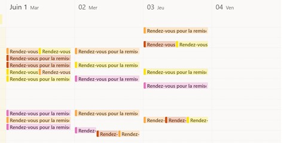

Stage BTS
24 MAI - 27 JUIN
Entreprise: CASIP-COJASOR
Presentation De l'entrerpise
Durant ma premiere année de BTS en initial j'ai effectuer un stage de 5 semaine dans pour consolider les competances que j'ai aquise.
L'entreprise dans la quelle j'ai effectuer mon stage se nomme CASIP-COJASOR
La Fondation Casip-Cojasor, reconnue d'utilité publique, est née en 2000 de la fusion du Comité d'action sociale israélite de Paris (CASIP), fondé en 1809, et du Comité juif d'action sociale et de reconstruction (COJASOR) fondé en 1945.
Presentation Du Stage
Durant mon stage j'ai participer a divers mission au sain de l'equipe informatique :
-
J'ai pu traité durant tout le long de mon stage les divers tickets ouvert par les salariés de la boite.
J'ai deployer des smartphones proffesionnels, en amont j'ai enroller ces derniers avec des MDM via la plateform Cisco Meraki
Prise de rendez-vous avec les salariés afin de leur faire un topos sur l'utilisation du téléphone proffesionnel
Menager des images d'os preconfigurer en uttilisant le logiciel open source "CloneZilla"
Prise de rendez-vous

Conclusion:
Durant ce stage j’ai pu apprendre de nombreuses choses. En effet dans un premier temps j’ai pu me familiarise dans la vie en entreprise ce qui me permettra de mieux m’intégré dans le monde du travail.
Je remercie la fondation Casip-Cojasor qui a eu la gentillesse de m’accueillir dans ses locaux en tant que stagiaire ainsi que tout son personnel pour leurs bienveillances et leurs savoirs faire.